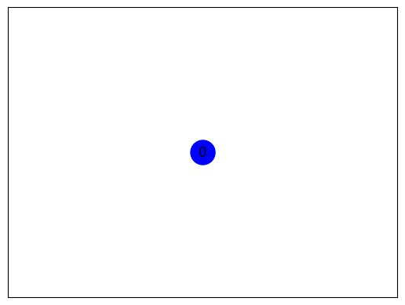

Keyword Berita#
Keyword berita adalah istilah atau frasa penting yang menggambarkan isi atau topik utama dari sebuah berita. Dalam konteks jurnalisme dan penyampaian informasi, keyword berfungsi untuk:
1. Mengidentifikasi Topik Utama#
Keyword membantu dalam mengidentifikasi tema sentral dari sebuah artikel berita. Misalnya, dalam berita tentang pemilihan umum, keyword bisa termasuk “pemilu”, “calon”, “partai politik”, dan “suara”.
2. Mempermudah Pencarian#
Penggunaan keyword yang tepat memudahkan pencarian berita dalam mesin pencari atau database. Ketika orang mencari informasi tertentu, mereka biasanya menggunakan keyword yang relevan. Misalnya, mencari berita tentang “cuaca buruk” akan memunculkan artikel yang menggunakan keyword tersebut.
3. Optimasi Mesin Pencari (SEO)#
Dalam konteks digital, keyword yang relevan sangat penting untuk optimasi mesin pencari (SEO). Penggunaan keyword yang strategis dalam judul dan konten berita dapat meningkatkan visibilitas artikel di hasil pencarian, menarik lebih banyak pembaca.
4. Meningkatkan Relevansi#
Keyword membantu dalam menentukan relevansi berita terhadap isu-isu terkini. Penggunaan keyword yang sesuai dengan tren dan peristiwa terkini dapat membuat artikel lebih relevan bagi audiens.
5. Pengorganisasian Konten#
Dalam platform berita dan media, keyword digunakan untuk mengorganisasikan dan mengkategorikan konten. Ini membantu pembaca untuk menemukan berita terkait dengan topik yang sama dengan lebih mudah.
6. Analisis dan Riset#
Dalam analisis data berita, keyword dapat digunakan untuk melakukan analisis tren, melihat topik-topik yang sedang hangat diperbincangkan, serta membantu dalam riset yang lebih mendalam tentang isu tertentu.
Kesimpulan#
Keyword berita merupakan elemen krusial dalam penyampaian informasi. Mereka bukan hanya membantu dalam identifikasi dan pencarian berita, tetapi juga berperan dalam strategi penyebaran informasi, optimasi SEO, dan analisis tren berita. Penggunaan keyword yang tepat dapat meningkatkan keterbacaan dan dampak dari sebuah artikel berita.
# Library untuk text preprocessing
import nltk
from nltk.corpus import stopwords
from nltk.tokenize import word_tokenize
import re
# Library untuk data manipulation
import pandas as pd
import networkx as nx
import matplotlib.pyplot as plt
from tqdm import tqdm
# Library untuk text similarity
from sklearn.feature_extraction.text import TfidfVectorizer
from sklearn.metrics.pairwise import cosine_similarity
data = pd.read_csv('hasil_crowling.csv')
data.head()
| Judul | Tanggal | Ringkasan | Kategori | |
|---|---|---|---|---|
| 0 | Natalius Pigai Satu-satunya Calon Menteri Prab... | 17 Okt 2024 02:12 | Mantan Komisioner Komnas HAM Natalius Pigai tu... | Politik |
| 1 | Ungkap Arahan Prabowo Saat Pembekalan Calon Me... | 17 Okt 2024 01:10 | Sebanyak 59 tokoh hadir mengikuti kegiatan pem... | Peristiwa |
| 2 | Begini Cara Dorong Petani Lokal untuk Capai Pa... | 16 Okt 2024 23:21 | Berikut ini adalah beberapa cara yang dapat me... | News |
| 3 | Presiden Jokowi dan Prabowo Subianto Disebut K... | 16 Okt 2024 20:55 | Jelang pensiunnya Presiden Joko Widodo atau Jo... | Politik |
| 4 | Pembekalan Calon Menteri Prabowo Kelar, Rombon... | 16 Okt 2024 20:10 | Mereka mengantre keluar kediaman lantaran bera... | Politik |
#Prepocessing
membersihkan dan menghapus tanda baca yang ada.
def clean_text(text):
text = re.sub(r'((www\.[^\s]+)|(https?://[^\s]+))', ' ', text) # Menghapus https* and www*
text = re.sub(r'@[^\s]+', ' ', text) # Menghapus username
text = re.sub(r'[\s]+', ' ', text) # Menghapus tambahan spasi
text = re.sub(r'#([^\s]+)', ' ', text) # Menghapus hashtags
text = re.sub(r"[^a-zA-Z :\.]", "", text) # Menghapus tanda baca
text = re.sub(r'\d', ' ', text) # Menghapus angka
text = text.lower()
text = text.encode('ascii','ignore').decode('utf-8') #Menghapus ASCII dan unicode
text = re.sub(r'[^\x00-\x7f]',r'', text)
text = text.replace('\n','') #Menghapus baris baru
text = text.strip()
return text
def clean_stopword(tokens):
listStopword = set(stopwords.words('indonesian'))
filtered_words = [word for word in tokens if word.lower() not in listStopword]
return filtered_words
import nltk
nltk.download('punkt')
nltk.download('stopwords')
def preprocess_text(content):
result = {}
for i, text in enumerate(tqdm(content)):
cleaned_text = clean_text(text)
tokens = word_tokenize(cleaned_text)
cleaned_stopword = clean_stopword(tokens)
result[i] = ' '.join(cleaned_stopword)
return result
prep_result = preprocess_text(data['Ringkasan'])
[nltk_data] Downloading package punkt to /root/nltk_data...
[nltk_data] Package punkt is already up-to-date!
[nltk_data] Downloading package stopwords to /root/nltk_data...
[nltk_data] Package stopwords is already up-to-date!
0%| | 0/52 [00:00<?, ?it/s]
100%|██████████| 52/52 [00:00<00:00, 782.17it/s]
print(prep_result[39])
presiden terpilih prabowo subianto mengundang tokoh calon menteri kediaman hambalang bogor jawa barat .
kalimat_preprocessing = nltk.sent_tokenize(prep_result[39])
kalimat = nltk.sent_tokenize(data['Ringkasan'][39])
tfidf_vectorizer = TfidfVectorizer()
tfidf_preprocessing = tfidf_vectorizer.fit_transform(kalimat_preprocessing)
terms = tfidf_vectorizer.get_feature_names_out()
tfidf_preprocessing = pd.DataFrame(data=tfidf_preprocessing.toarray(), columns=terms)
tfidf_preprocessing
| barat | bogor | calon | hambalang | jawa | kediaman | mengundang | menteri | prabowo | presiden | subianto | terpilih | tokoh | |
|---|---|---|---|---|---|---|---|---|---|---|---|---|---|
| 0 | 0.27735 | 0.27735 | 0.27735 | 0.27735 | 0.27735 | 0.27735 | 0.27735 | 0.27735 | 0.27735 | 0.27735 | 0.27735 | 0.27735 | 0.27735 |
cossim_prep = cosine_similarity(tfidf_preprocessing, tfidf_preprocessing)
similarity_matrix = pd.DataFrame(cossim_prep,
index=range(len(kalimat_preprocessing)),
columns=range(len(kalimat_preprocessing)))
similarity_matrix
| 0 | |
|---|---|
| 0 | 1.0 |
G_preprocessing = nx.DiGraph()
for i in range(len(cossim_prep)):
G_preprocessing.add_node(i)
for i in range(len(cossim_prep)):
for j in range(len(cossim_prep)):
similarity_preprocessing = cossim_prep[i][j]
if similarity_preprocessing > 0.1 and i != j:
G_preprocessing.add_edge(i, j)
pos = nx.spring_layout(G_preprocessing, k=2)
nx.draw_networkx_nodes(G_preprocessing, pos, node_size=500, node_color='b')
nx.draw_networkx_edges(G_preprocessing, pos, edge_color='red', arrows=True)
nx.draw_networkx_labels(G_preprocessing, pos)
plt.show()

closeness_preprocessing = nx.closeness_centrality(G_preprocessing)
sorted_closeness_preprocessing = sorted(closeness_preprocessing.items(), key=lambda x: x[1], reverse=True)
print("Closeness Centrality:")
for node, closeness in sorted_closeness_preprocessing:
print(f"Node {node}: {closeness:.4f}")
Closeness Centrality:
Node 0: 0.0000
ringkasan_closeness_preprocessing = ""
print("Tiga Node Tertinggi Closeness Centrality Menggunakan Preprocessing:")
for node, closeness_preprocessing in sorted_closeness_preprocessing[:3]:
top_sentence = kalimat[node]
ringkasan_closeness_preprocessing += top_sentence + " "
print(f"Node {node}: Closeness Centrality = {closeness_preprocessing:.4f}")
print(f"Kalimat: {top_sentence}\n")
Tiga Node Tertinggi Closeness Centrality Menggunakan Preprocessing:
Node 0: Closeness Centrality = 0.0000
Kalimat: Presiden terpilih Prabowo Subianto mengundang sejumlah tokoh yang di antaranya merupakan calon menteri ke kediaman Hambalang, Bogor, Jawa Barat.
pagerank_preprocessing = nx.pagerank(G_preprocessing)
sorted_pagerank_preprocessing= sorted(pagerank_preprocessing.items(), key=lambda x: x[1], reverse=True)
print("Page Rank :")
for node, pagerank_preprocessing in sorted_pagerank_preprocessing:
print(f"Node {node}: {pagerank_preprocessing:.4f}")
Page Rank :
Node 0: 1.0000
ringkasan_pagerank_preprocessing = ""
print("Tiga Node Tertinggi Page Rank Menggunakan Preprocessing:")
for node, pagerank_preprocessing in sorted_pagerank_preprocessing[:3]:
top_sentence = kalimat[node]
ringkasan_pagerank_preprocessing += top_sentence + " "
print(f"Node {node}: Page Rank = {pagerank_preprocessing:.4f}")
print(f"Kalimat: {top_sentence}\n")
Tiga Node Tertinggi Page Rank Menggunakan Preprocessing:
Node 0: Page Rank = 1.0000
Kalimat: Presiden terpilih Prabowo Subianto mengundang sejumlah tokoh yang di antaranya merupakan calon menteri ke kediaman Hambalang, Bogor, Jawa Barat.